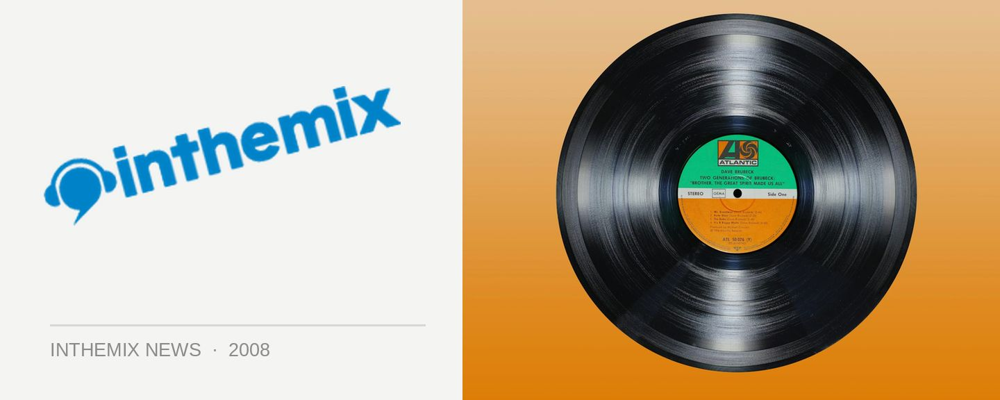

Beats Working hit the road
Rising out of the surrounds of Coffs Harbour where they’ve been brewing since early 2007, Beats Working is the musical project of Handsome Dan, JB AKA James Branson (previously from Kid Confucius) along with MC Mullut and DJ Helmy. Their debut LP Harbour Drive is set for release on July 30 through Obese Records, a fusion of funk, soul and pop that also takes on string and brass sections and dynamic arrangements.
With previous single Exercise already featuring on Triple J, you’ll be able to see for yourself when Beats Working take it across the country.
Beats Working will be showcasing Harbour Drive at the following shows…
27 Jul – Cambridge Hotel, Newcastle
15 Aug – Coffs Hotel, Coffs Harbour
29 Aug – Uber, Brisbane w/ Drapht
6 Sept – Revolver, Melbourne w/ Spit Syndicate
13 Sept – Cambridge Hotel, Newcastle w/ Spit Syndicate
19 Sept – UTS Loft Bar: Proper 11, Sydney w/ Dialectrix, Killa Queenz & more
10 Oct – Coffs Hotel, Coffs Harbour
25 Oct – Village Fair Festival, Bathurst